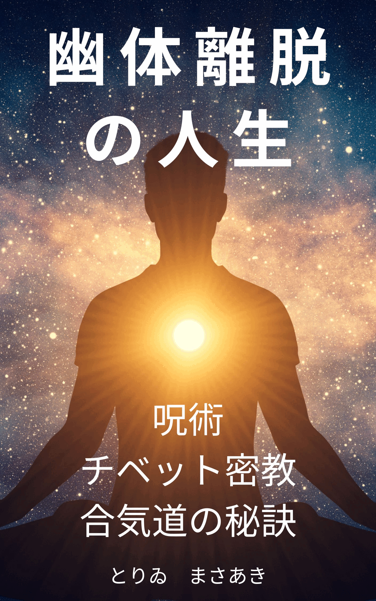

「幽体離脱の人生ー呪術・チベット密教・合気道の秘訣」
|  | アマゾンで販売中
kindle版 290円 [Kindleはパソコンやスマートフォンに無料でインストールできます。本がバージョンアップしても無料で再ダウンロードできます。] ペーパーバック版 1089円 「幽体離脱の人生ー呪術・チベット密教・合気道の秘訣」 |
| ー目次ー | ||||
| はじめに | ||||
| ＜第１章 ～１８歳＞ | ||||
| 小学校時代 | 小学生の時の不思議な夢 | |||
| 夢の偵察 | 夢での霊的存在とのエネルギーの交流 | |||
| 中学校時代 | 大人になるとエネルギーが枯渇する理由 | |||
| 高校時代 | 幽体離脱ができるようになったきっかけ | |||
| 神社での幽体離脱 | 神社での幽体離脱での不思議な存在との出会い ナワリズム（カルロス.カスタネダによるメキシコの呪術）における集合点と第２の注意力の概要 | |||
| ＜第２章 １９歳〜２７歳＞ | ||||
| 予備校、大学時代 | 幽体離脱するための性的な動機づけ | |||
| 霊交と人工的精霊 | 幽体離脱での何十回もの性交体験 ダイアンフォーチュンの理論であるラポートと人工的精霊 | |||
| ナーロー六法 | チベット密教のナーロ六法の概要 | |||
| 光明体験 | 私の光明（莫大なエネルギー）の神秘体験 | |||
| プログラマー時代 | 倶生歓喜の体験を引き起こしたきっかけ | |||
| 倶生歓喜の体験 | 私の倶生智（超意識）と倶生歓喜（主観と客観がなくなった歓喜）の体験 | |||
| ＜第３章 ２８歳～３５歳＞ | ||||
| 講師時代 | 気功法を始めた理由 | |||
| 気功法 | 仕事での気功法の利用 | |||
| ＜第４章 ３６歳～４５歳＞ | ||||
| パソコンサポート時代 | 幽体離脱でナンバーズ予知をしようと思ったきっかけ | |||
| ナンバーズ予知の試みと別世界 | 何十回もの幽体離脱によるナンバーズ予知の試み ロバートモンローの第３の身体の理論 | |||
| エネルギーラインと光明化 | 幽体が光明化した特別な幽体離脱体験 ナワリズムにおける幽体の光明化の理論 | |||
| ＜第５章 ４６歳～＞ | ||||
| ビル管理時代 | 肥田式強健術を実践し始めたきっかけ | |||
| 肥田式強健術 | 肥田式強健術の概要と、その絶大なる効果 | |||
| 横須賀時代 | ナワリズムの研究と実践を始めたきっかけ | |||
| 忍び寄り | ナワリズムの忍びよりの修行の理論と効果 | |||
| 反復 | ナワリズムの反復の修行の理論と効果 | |||
| 意志の統御 | ナワリズムの意志の熟練の概要 自分の人生における意志（精霊）とのつながり | |||
| 静岡時代 | チベット密教の研究と実践を始めたきっかけ | |||
| チベット仏教 | ●四念処、法灯明、自灯明 お釈迦様の教えである「法灯明、自灯明」の真の解釈 ●六波羅蜜 六波羅蜜の理論と効果 ●生起次第 曼荼羅を瞑想する方法 ●脈管・ルン・滴 中央脈管、ルン、滴、意識の関係 ●定寂身 {究竟次第の各段階の修行法とそれぞれの目的} 秘処の先端における滴の観想の理由と目的 ●定寂語 金剛念珠と心臓のア字観の理由と目的 ●定寂心 楽空無差別により四空を体験する方法 ●幻身 定寂心の四空と睡眠の四空を混合して、譬えの光明体験をして、不浄な幻身（幽体）を達成する方法 ●光明 幽体離脱後に幽体を光明に溶け込ませて、勝義の光明体験をする方法 ●双入 勝義の光明から清浄な幻身を達成する方法 | |||
| 合気道のきっかけ | 合気道に興味を持つようになったきっかけ | |||
| 幽体結成と気の妙用 | ●火水（かみ）の結び 合気道開祖の植芝盛平氏の根本思想 ●◯丹田 丹田にエネルギーを発生させて、合気道の技と結びつける方法 ●△姿勢 足の構えでエネルギーを発生させる方法 ●幽体結成 植芝盛平氏の神秘体験と彼の霊体結成の目標 ●気の妙用 霊体結成による気の妙用 | |||
| まとめ | ナワリズムとチベット密教、肥田式強健術、合気道に共通すること | |||
| あとがき |
|
|
||||||||
更新履歴
修正は頻繁にしていますが、軽微な修正はバージョンの数字に反映させていません。電子版は端末から削除して、再ダウンロードすれば無料で最新版をダウンロードできます。
2023年11月20日 電子版出版 2023年11月22日 ペーパーバック版（第１刷）出版 2023年11月22日 電子版出版（第2版）・ペーパーバック版（第2刷）出版 【電子版は無料で新しいバージョンに更新されます】
2023年12月31日 英語版出版(kindle版） 2024年1月1日 英語版出版(ペーパーバック版） My Life with Astral Projection: Secrets of Sorcery, Tibetan Buddhism, Aikido